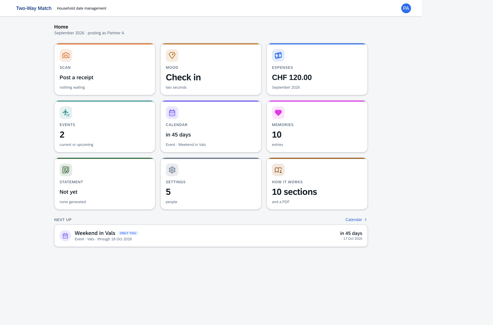
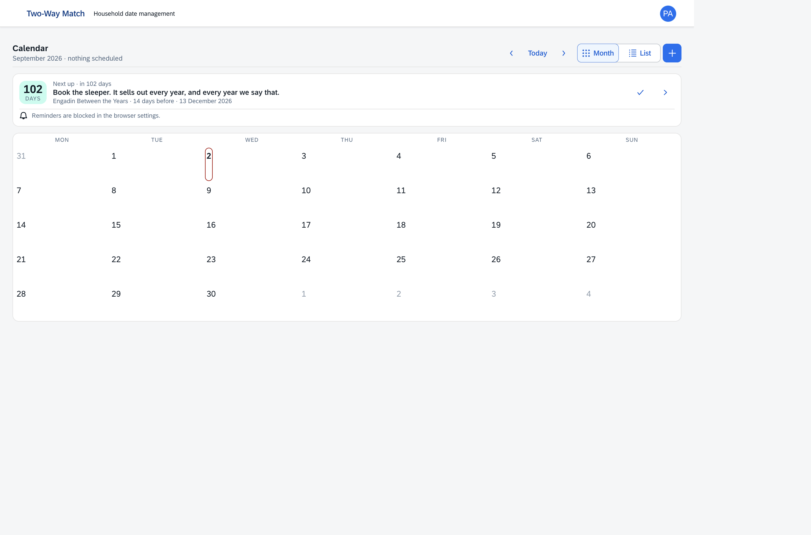
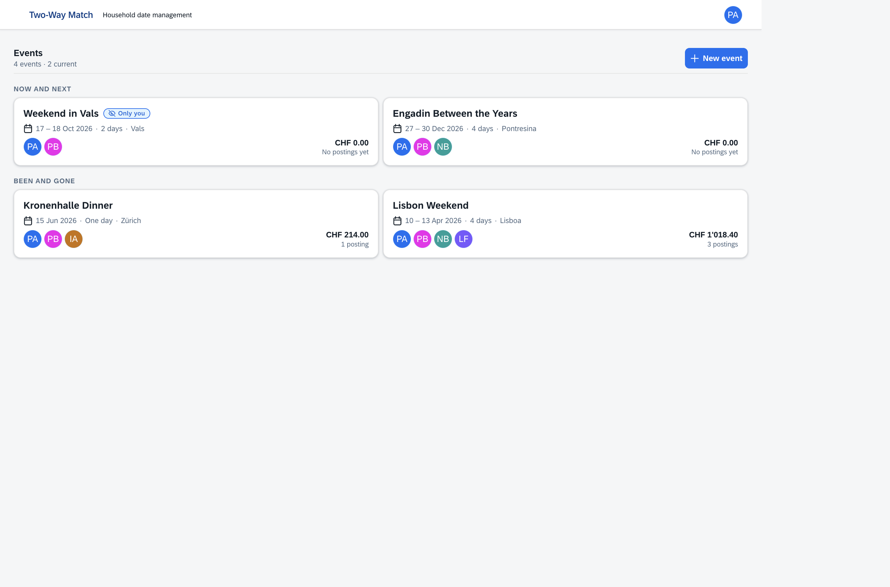
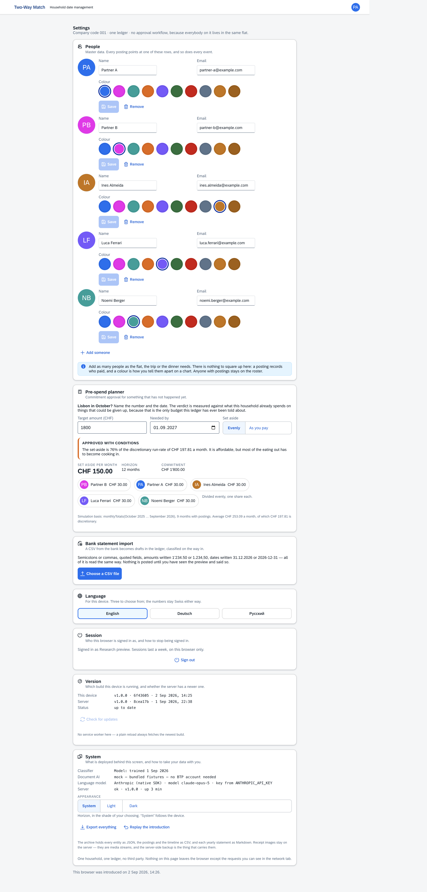
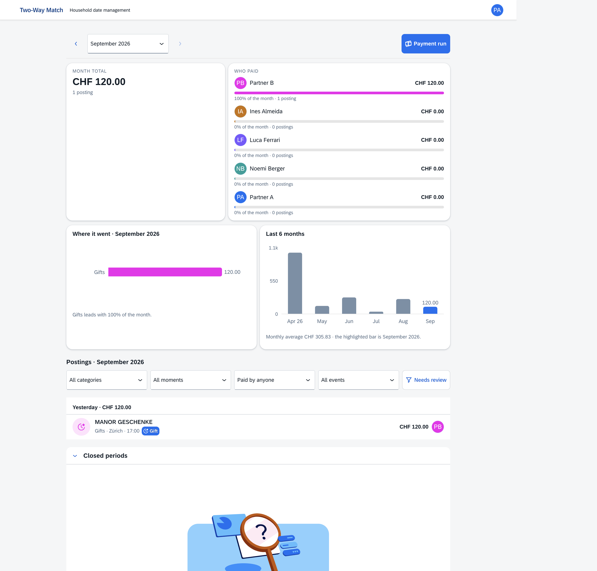
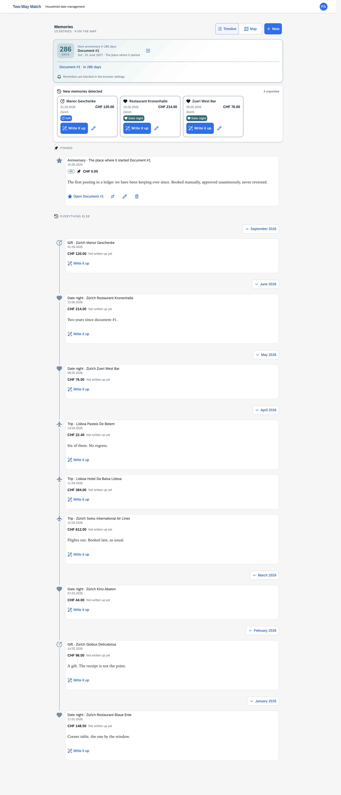
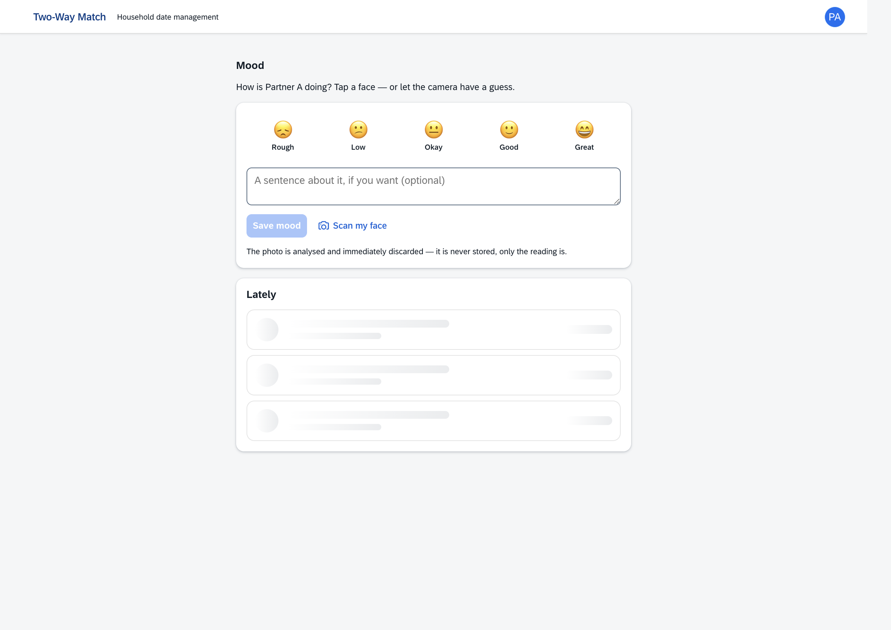

The opportunity
People already use separate apps to find a date, coordinate a group, track a mood, save a restaurant, split a cost and keep photos. The unclaimed loop is plan → experience → reflect → remember → choose better next time.
A critical plan for evolving Two-Way Match from a private household ledger into a shared-life operating system for couples and close circles, followed by a trusted place discovery and merchant marketplace.
Focus view is on. Detailed matrices, screenshots, implementation inventories and source cards are hidden.
People already use separate apps to find a date, coordinate a group, track a mood, save a restaurant, split a cost and keep photos. The unclaimed loop is plan → experience → reflect → remember → choose better next time.
Building a calendar, journal, review network, expense tool and ad platform at once produces five weak products. A public feed also changes a trusted private app into a surveillance concern overnight.
Start with people already dating or partnered, plus close friend circles, in one city. This is date management, not matchmaking. Deliver a useful private plan-to-memory loop with no public audience. Add opt-in place publishing only after repeated use is proven.
Scan expenses, attribute who paid, group them into events, close a month, and turn selected spending into memories.
Help a trusted circle decide when, choose where, notice how it felt, and build a shared history.
Recommend places from observed circle taste and explicit ratings; let merchants buy transparent reach without buying rank or private data.
Groups, Users, Memberships, Conversations, Messages and nullable tenant links, plus seeded group columns.S29 They are not projected by the current services or rendered by the current React app, so they are excluded from the live feature counts above. The ADR correctly puts group isolation before chat.







| Capability | Implemented behavior | Readiness | Strategic use |
|---|---|---|---|
| Home | Live tiles for scan queue, mood, month spend, events, next calendar item, memories, statement and people. | Live | Can become the circle “Today” hub. |
| Receipt scan | Camera/library input, image normalization, OCR extraction, two-head classification, human review, draft creation, duplicate warning and optional memory. | Live | Useful verification signal for visits; keep private. |
| Ledger | Monthly navigation, status/payer/category/event filters, exact totals, trends, edit, confirm, delete, duplicate detection and payment run. | Live | Optional cost context, not the lead proposition. |
| Events | Create/edit/delete, dates, place, note, participants, payer totals, expenses, photos, reminders and surprise reveal. | Live | Closest existing object to the future Plan. |
| Calendar | Month/list views, multi-day events, day detail, reminders, completion and next-up strip. | Live | Add availability polls and external calendar sync. |
| Memories | Manual and expense-detected timeline, editor, photos, pinned items, anniversaries, map and Document #1. | Live | Retention and emotional differentiation. |
| Mood | Five-level manual check-in, optional 280-character note, history, and optional face estimate whose photo is discarded. | 500 observed | Use as private reflection, never relationship scoring. |
| Annual statement | Confirmed-year aggregation, trips, date-night streaks, places, top merchants and stored Markdown narrative with deterministic fallback. | Live | Turn into an opt-in circle yearbook. |
| People | Create/edit/delete household members, colors and emails; no assumption of exactly two. | Live | Must evolve into accounts, circles, roles and invitations. |
| Pre-spend planner | Target/date, equal or observed shares, historical discretionary run-rate and affordability verdict. | Live | Later trip/date budget context. |
| Bank import | CSV mapping, date-order and sign controls, preview, progress and error report. | Live | Keep optional; bank plumbing is not the growth wedge. |
| System | Theme, language, session, version/update state, model/provider status, onboarding replay and JSON/CSV/Markdown export. | Live | Strong trust and portability foundation. |
| PWA | Installable shell, prompt updates, cached static assets and network-first ledger reads. | Live | Fast pilot path without native apps. |
People, categories, events, participants, event photos, reminders, expenses, receipts, moods, memories, photos, settlements, statements and classifier corrections.
SAP Document AI or fixtures; local or remote category/moment classifier; provider-chain statements; optional camera mood estimate.
Bcrypt auth, signed sessions, same-origin CSP, action rate limits, upload guards, EXIF removal, export, backup and restore scripts.
Authoritative implementation surfaces: domain schema, service contract, handlers, route map, and cross-system contracts.
/api/auth/me call did not resolve until the screenshot browser used a development-only route response; mood history returned HTTP 500; and React warned that the parent events route lacks a trailing *. Treat these as reproducible investigation items, not final diagnoses. The Fly/Docker deployment and scheduled remote backup also remain operationally unverified in repository documentation.
| Market | Job users hire it for | Incumbent strength | Remaining opening |
|---|---|---|---|
| Shared calendars | Know when family or friends are free. | Deep calendar sync, habit and network. | Move from logistics into place choice and reflection. |
| Event invitations | Get a group out of a chat and into a room. | Viral host-to-guest distribution, RSVP, style. | Ongoing circle history after the event ends. |
| Relationship apps | Create a small ritual and better conversation. | Expert content, subscriptions, daily cadence. | Connect conversation to actual plans and shared places. |
| Mood journals | Notice patterns with almost no writing. | Fast capture, privacy, charts, customization. | Private event-level pulse without clinical claims. |
| Expense sharing | Remove awkwardness from group money. | Balances, integrations, currencies, trust. | Use cost as context without debt or reconciliation. |
| Place discovery | Decide where to go and what to trust. | Huge inventory, reviews, maps, intent traffic. | Occasion fit and recommendations from people whose taste is known. |
| Local advertising | Buy measurable access to nearby intent. | Scale, auctions, attribution and sales teams. | Small, transparent, high-fit placements after local density exists. |
Switzerland is a sensible proving ground, not because the whole country is the immediate market, but because the current product is Swiss-shaped. The FSO reports about 4.1 million private households at the end of 2024: 37% one-person, 27% couples without children and 28% households with a child under 25.S25 Do not call the remaining households the TAM: friendship circles overlap households, and many households will never buy.
| Product | Time / plans | Private reflection | Money | Place graph | Model | Lesson |
|---|---|---|---|---|---|---|
| TimeTree | Strong | Limited | No | Public calendars | Ads + $44.99/year premium | Shared utility can scale broadly.S5S6 |
| Howbout | Strong social calendar | Social context | No | No | Venture-funded; monetization unclear | “Social around time” is already an explicit thesis.S7 |
| Partiful | Strong event flow | Photo album | Payments/tickets | Event discovery | Free; tickets emerging | One-click host flow creates distribution.S8S9 |
| Paired | No scheduling | Strong couple ritual | Content topic | No | CHF 80/year per pair | One payer covering the pair is elegant.S10S11 |
| Daylio | No group plans | Strong private mood log | No | No | Freemium | Two taps, local privacy and useful review loops.S12 |
| Splitwise | Trip groups | No | Strong debt ledger | No | Ads + Pro | Money solves pain but frames relationships as balances.S14 |
| Honeydue | Bill reminders | Transaction chat | Couple finance | No | Free + optional tips | Usage does not automatically become durable revenue.S15S16 |
| Beli | No scheduling | Personal lists | No | Friend restaurant graph | Not disclosed | Taste and friends can beat anonymous averages.S18 |
| Yelp | No circle plans | No | No | Mass local graph | Ads, SaaS, transactions, data | Ads require intent and scale; restaurants are difficult.S20 |
| Two-Way Match now | Events/calendar | Mood/memories | Sums, no debt | Private map | None | Most components exist, but identity and permission architecture do not. |
| Proposed product | Circle planning | Private pulse/history | Optional context | Consent-based taste | Subscription, then merchant | The intersection is the differentiation. |
Partiful focused on making an invite and wrangling guests easy across platforms. CNBC reported over 60% of active app users checked weekly; the product says it remains free and supports polls, blasts, payments and shared photos.S8S9
Copy: guest access without forcing an app install; every plan becomes distribution.
Daylio makes a mood entry possible in two taps; Paired promises five minutes a day. Both make the first action smaller than the benefit users receive later.S10S12
Copy: a post-event pulse should take seconds, with writing optional.
A TimeTree calendar, Daylio diary or Beli personal list is useful even before a large network arrives. This avoids an empty-feed cold start.S5S12S18
Copy: the circle must benefit when every review is private.
Foursquare sunset City Guide on 15 December 2024 and its web version on 28 April 2025, while directing users to Swarm for check-ins and a personal lifelog.S21
Lesson: personal history can be stickier than another horizontal city guide.
Acorns acquired Zeta assets and hired its cofounders in June 2025 to accelerate a broader family strategy; existing Zeta customers were invited to Acorns.S17
Lesson: export, portability and a viable standalone model are part of trust.
Yelp earned $1.46B net revenue in 2025, yet restaurant/retail/other ad revenue fell 6% to $444M and total paying ad locations fell 3%. Services drove growth instead.S20
Lesson: “restaurants will pay” is not a plan; prove incremental visits and low sales cost.
They already chose each other; this is not partner discovery. They want intentional time but coordination is fragmented, save places across several apps and repeat “what should we do?” conversations.
They struggle to leave the group chat, choose a date, agree on a place and collect the pictures afterward.
They need school calendars, chores, custody, child privacy and role controls. The need is real, but the product expectations and safety burden are much larger.
They need discovery, organizer tools, RSVP capacity, ticketing, spam defense and moderation more than intimacy or a shared memory.
| Moment | Job | Current workaround | Interview prompt |
|---|---|---|---|
| Planning | Help us find a real slot before enthusiasm disappears. | Chat messages, calendar screenshots, polls. | “Show me the last plan that took too long to arrange.” |
| Choosing | Give us a few places that fit this occasion and this group. | Instagram saves, Maps tabs, one opinionated friend. | “How did you choose the last restaurant? What made you trust it?” |
| During | Keep logistics available without turning the event into admin. | Pinned chat message. | “What information did someone ask twice?” |
| After | Keep the photo, place and feeling with almost no work. | Camera roll, chat archive, nothing. | “How would you find the name of a place from a good night last year?” |
| Next time | Remember what this particular group actually enjoys. | Memory, generic star ratings. | “Whose restaurant advice do you trust, and why?” |
A mood or “would return” pulse should take two taps. Notes, photos and rich ratings remain optional.
Every reminder is dismissible; streaks never punish; sharing is never preselected. A missed ritual is not framed as failing the relationship.
Research across surveys and lab experiments linked shared novel/arousing activities with higher experienced relationship quality, but it does not justify promising relationship improvement from an app.S26
Ask “Do you want company, help, or space?” only when a person chooses to share a mood. Do not expose a raw score and expect a partner to interpret it.
Choice-overload effects depend on context, but large sets are riskier when preferences are uncertain and decisions are difficult. Curate three fit-for-purpose places, then offer “show more.”S27
Use recaps, anniversaries and “things we loved”; avoid couple scores, mood leaderboards, public attendance streaks and comparisons with other relationships.
| Use | Avoid | Reason |
|---|---|---|
| Weekly “time we made” recap | Daily guilt notifications | Reward lived experience, not app opening. |
| Private check-in with chosen sharing | Automatic partner mood feed | Prevents emotional surveillance. |
| Flexible cadence | Fragile streaks | Real relationships include illness, travel and conflict. |
| “Worth repeating?” | Score the date or the partner | Rate the experience/place, not the person. |
| Endless-feed-free planning | Engagement-maximized content feed | The success event happens offline. |
Next plan, two pending decisions, one gentle reminder and quick-add. No dashboard of everything.
Saved, tried and suggested for a specific circle and occasion. Search is secondary to a short recommendation set.
A chronological shared memory, with private layers visible only to their owner and public ratings shown separately.
Would return? yes/maybe/no; optional relative ranking; occasion tags; price band; noise; dietary/accessibility facts; short note and photos.
Show circle endorsements, taste similarity, recency, verified-visit confidence and occasion fit. Never reduce everything to one universal number.
A receipt can issue an opaque “visited” proof. Never publish amount, exact time, companions, mood, receipt image or raw merchant data.
| Merchant product | When to launch | Proposed pilot price | Guardrail |
|---|---|---|---|
| Claimed profile | Once place pages receive real organic views | Free | Merchant cannot edit user ratings. |
| Offer / occasion package | At 5,000+ monthly local place-intent sessions | CHF 49-99/month | Offer shown by explicit context, never mood. |
| Sponsored placement | Only after organic recommendations satisfy users | CPC/CPA pilot with cap | Label “Sponsored”; never alter organic rank. |
| Booking referral | When a licensed partner and attribution exist | Negotiated commission | Show partner and price; no hidden redirect. |
| Aggregate insights | After privacy review and meaningful sample sizes | CHF 149+/month | No individual or small-cohort mood/relationship data. |
| Priority | Features | Reason |
|---|---|---|
| Build next | Accounts, circle membership, invitation, availability poll, plan proposal, RSVP, private post-event pulse, permission center. | Forms the smallest complete shared-time loop. |
| Test first | External calendar sync, three-place recommendation, shared albums, premium recaps, expense context. | Likely useful, but cost and demand must be measured. |
| Later | Public profiles, follows, merchant claims, sponsored placements, booking, family/child roles, public meetups. | Requires density, moderation, permissions and compliance. |
| Avoid | Relationship score, mood leaderboard, automatic mood sharing, ads triggered by low mood, pay-to-rank reviews, endless feed, autonomous camera emotion diagnosis. | Harms trust or optimizes the wrong behavior. |
One circle, planning, RSVP, basic private history, place saves and export. Enough to create an invite loop and real utility.
Unlimited history, premium recaps, calendar sync, richer albums, advanced place lists and travel planning. One payer covers the circle.
Free claimed page; paid offers, sponsored intent placement and aggregate performance only after local demand density is measurable.
Change the inputs. This is a planning model, not a forecast.
| Scenario | Active circles | Paid circles | Merchants | Illustrative annual revenue | Meaning |
|---|---|---|---|---|---|
| Proof | 2,000 | 160 at CHF 59 | 0 | CHF 9,440 | Demand signal, not a company. |
| City foothold | 15,000 | 1,800 at CHF 59 | 50 at CHF 99/month | CHF 165,600 before referrals | Supports a lean operation, not a large team. |
| Multi-city | 60,000 | 9,000 at CHF 69 | 250 at CHF 149/month | CHF 1.07M before referrals | Potential small company if retention and margins hold. |
Less coordination friction, better-fit places, a meaningful shared history and private control.
Urban dating pairs and couples first; close friend circles next; merchants only after user density.
Invites, local creators, search content, referrals, venue partnerships and app stores later.
Circle subscription, booking/referral, merchant tools, transparent sponsorship.
Engineering, moderation, place data, maps, storage, AI, support, compliance and local sales.
Longitudinal circle taste and history with trusted permissions, not generic AI or a calendar UI.
The host sends a web link; guests vote without registration. Account creation follows value, not before it.
A weekly or monthly recap brings people back to something they lived, not content the app manufactured.
A useful private rating improves the next choice; optional public cards attract people with similar taste.
| Channel | Message | Asset | Success test |
|---|---|---|---|
| Invite links | “Vote on Saturday — no app required.” | Fast responsive plan page | 50%+ invite acceptance. |
| Instagram / TikTok creators | “We stopped losing date ideas in our saved posts.” | Real 20-second workflow demo | Activated circles, not views. |
| Local search | “Three quiet Zurich restaurants for a long conversation.” | Useful occasion guides with methodology | Save-to-plan conversion. |
| Venue cards / QR | “Would your group come back? Save it privately.” | Neutral post-visit prompt | Completed, non-incentivized ratings. |
| Referral | “Give another circle three months of Plus.” | Gift link after a successful recap | Referred circle W4 retention. |
| PR | “A social app measured by time spent together, not screen time.” | Founder story + transparent metrics | Qualified waitlist and partners. |
Meaningful plans completed per retained circle per month. A plan counts when two or more members confirm it happened.
Circle created, another member joins, and a time or place decision is completed within 72 hours.
Share reversals, privacy complaints, blocks, review appeals, ad hides, report rate and deletion completion time.
| Stage | Metric | Continue threshold | What failure means |
|---|---|---|---|
| Invite | Invite acceptance | ≥ 50% | Friction, weak context or low trust. |
| Activation | Activated new circles | ≥ 60% | The first job is not clear or urgent. |
| Retention | Week-4 retained circles | ≥ 35% | Utility is episodic or memory loop is weak. |
| Reflection | Completed post-event pulse | ≥ 30% of completed plans | Prompt is intrusive or value arrives too late. |
| Discovery | Recommended place selected | ≥ 20% of place decisions | Inventory, trust or relevance is insufficient. |
| Product-market signal | “Very disappointed” without product | ≥ 40% of retained core users | Useful, but not yet indispensable. |
| Paid | Annual conversion | 8-12% test range | Package or value is wrong; do not add ads as a shortcut. |
| Merchant | Pilot renewal | ≥ 10 of 30 | No provable ROI or price too high. |
Circles, members, plans, availability, RSVPs, moods, expenses, memories and private visits.
Explicit projection that strips private fields, records consent and supports revoke/delete.
Places, published reviews, lists, follows, search, recommendations and moderation.
Claims, offers, campaigns, sponsorship disclosure, impressions, clicks and attribution.
| New domain object | Essential fields / rules | Migration relationship |
|---|---|---|
| User Modeled | Verified identity, locale, age band and deletion state; separate from a group’s Person row. | Extend the ADR’s Users; map existing People only after explicit claim. |
| Group + Membership Modeled | Kind, role, invitation, membership status, permissions and per-feature privacy defaults. | Extend the ADR’s entities; existing household becomes the seeded default group. |
| Plan | Creator, circle, candidate times, chosen time, place, status, RSVP and visibility. | Extend or migrate Events after contract review. |
| AvailabilityVote | Candidate slot, member response, optional confidence; never public. | New composition under Plan. |
| Place | Licensed provider IDs, canonical name/address/category, source and refresh terms. | Normalize free-text place gradually. |
| Visit | Circle, plan, place, occurred date, optional opaque verification proof. | Derived from Event/Expense without exposing receipt. |
| PlaceReview | Author, visit, wouldReturn, occasion tags, facts, note, audience, publication state. | New; mood remains separate. |
| ConsentRecord | Actor, object, audience, field preview, timestamp, version and revocation. | Mandatory bridge record. |
| MerchantClaim | Place, verified business, role, evidence and status. | New public/commercial boundary. |
| Campaign + Offer | Budget, geography, query context, disclosure, dates, caps and creative. | No access path to moods or private circles. |
| ModerationCase | Report reason, evidence, decision, appeal, audit timestamps. | Required before public UGC. |
Mood, availability, expenses, companions and memories start private. Public is a separate action with an audience preview.
Commercial ranking receives query, coarse area, occasion and aggregate popularity; it cannot query moods or private relationship history.
People can inspect, revoke and delete published material. Cached public projections must be invalidated quickly.
“Three friends would return” is understandable. “AI picked this” is not an explanation.
Do not launch child accounts until guardian roles, age assurance, direct-message limits, location controls and ad bans are designed and reviewed.
Export plans, memories, ratings and media in durable formats. The current app already demonstrates this philosophy.
| Data | Private use | Recommendation use | Advertising use | Public use |
|---|---|---|---|---|
| Mood / note | User reflection | No | Never | Only user-authored explicit share, preferably not supported at launch |
| Availability | Circle scheduling | No | Never | No |
| Expense / receipt | Cost context | Opaque visit proof only | Never | No amount/image/companions |
| Private place rating | Circle taste | Within chosen circles | No individual targeting | Only after publish action |
| Published review | History | Public taste graph | Contextual adjacency only | Chosen audience |
| Current search context | Results | Ranking | Coarse contextual sponsorship | Not published |
Failure: every category is mediocre. Mitigation: ship one complete plan-to-pulse loop; freeze public and merchant work until retention gate.
Failure: recommendations have no local coverage. Mitigation: private saves + licensed inventory + one-city concierge curation before public UGC.
Failure: a mood, companion or cost leaks. Mitigation: service isolation, threat model, field-level publication tests, security review and incident plan.
Failure: paid/fake reviews destroy credibility. Mitigation: verified experience signals, anomaly detection, disclosure, appeals and no pay-to-rank.
Failure: mood scores become pressure or monitoring. Mitigation: private default, no score, consented sharing and user research with diverse relationship structures.
Failure: users like it but expect free. Mitigation: paid checkout tests by week six; do not use future ads to excuse failed subscription value.
Failure: CHF 99 revenue requires hours of selling/support. Mitigation: self-serve only after organic inbound; concierge pilot measures true acquisition effort.
Failure: single-household authorization is stretched into multi-tenancy. Mitigation: identity and circle boundaries before invitations or public data.
Product intent, stack, commands and “no debt” philosophy. Primary internal source.
Implemented v1.0.0 features, security and operational caveats. Primary internal source.
15 entity projections and 17 actions/functions. Primary internal source.
Current live entities plus the in-progress Phase 0 platform models, enums, associations and privacy comments. Primary internal source.
Group calendars and first-party claim of 70M users/14B events reported in Nov 2025 search materials. Accessed 2 Sep 2026.
USD 4.49/month or 44.99/year, no ads, attachments and enhanced views. Accessed 2 Sep 2026.
Official Series A announcement
4M users, 50M events, around 2M weekly events and $8M raise; first-party, 19 Sep 2024.
Free invites, polls, guest questions, text blasts, payments/tickets and shared albums. Accessed 2 Sep 2026.
500K estimated Q1 MAU, +400% YoY, 2M new users claimed, 60%+ weekly active use claimed. Company claims and Sensor Tower estimates are distinguished.
Five-minute check-ins, expert activities and first-party claim of 4M couples. Accessed 2 Sep 2026.
Swiss page showed CHF 80/year or CHF 15/month for both partners. Accessed 2 Sep 2026; regional pricing varies.
Two-tap mood/activity entry, private local storage, charts, goals and first-party 20M+ user claim. Accessed 2 Sep 2026.
Emotion vocabulary, patterns and regulation tools; nonprofit/donation model with Yale Center involvement. Accessed 2 Sep 2026.
Official product site and Pro features
Groups, balances, settlement, currencies, receipt scan, import, itemization and ads/Pro model. Accessed 2 Sep 2026.
Couple finance, account aggregation, bill reminders and transaction chat. Accessed 2 Sep 2026.
Free product with optional $1-10 monthly tips; article dated 24 Aug 2019, so current model should be revalidated.
Acorns announcement, 24 Jun 2025
Asset acquisition, cofounder hires and invitation for existing Zeta customers to use Acorns. Primary acquirer source.
Personal restaurant maps/lists, friend activity and personalized recommendations. Scale and monetization were not reliably disclosed in reviewed first-party material.
74M+ monthly visitors (2025 Comscore), free listings, ads and restaurant SaaS. Vendor claims are not independent outcome evidence.
SEC-filed 2025 results, 12 Feb 2026
$1.465B net revenue; $948M services ads; $444M restaurant/retail/other ads (-6%); 330M cumulative reviews.
Mobile sunset 15 Dec 2024, web 28 Apr 2025; Swarm retained check-ins and personal lifelog. Primary source.
Official summary of prohibited fake/paid/insider reviews, suppression and controlled review sites.
Clarifies application to health apps outside HIPAA and notification duties for identifiable health data breaches.
European Commission DSA overview
Ad labels and explanations, sensitive-data targeting restriction, child targeted-ad ban, dark-pattern and moderation duties. Updated 10 Aug 2026.
Swiss Federal Statistical Office
About 4.1M private households at end-2024; 37% one-person, 27% couples without children, 28% with child under 25.
Aron et al., Journal of Personality and Social Psychology, 2000
Questionnaires, survey and three lab experiments associated shared novel/arousing activity with experienced relationship quality. This does not validate an app intervention.
Chernev, Bockenholt & Goodman, 2015
Meta-analysis of 99 observations (N=7,202) found important moderators; “fewer is always better” would overstate the evidence.
Fly deployment guide and go-live checklist
Local verification, Docker/Fly gaps, backup rehearsal and container retraining limitation. Primary internal sources.
TWM-ADR-002 summary, contract section and frontend plan
Phase 0 models Groups, Users, Memberships, Conversations, Messages and tenant links; later phases specify isolation, registration, chat and polish. These workspace changes were not service- or UI-complete when reviewed.
Confidence key: internal code and official filings/rules are high-confidence descriptions of their own scope; first-party user counts and vendor outcomes are medium-confidence; recommendations, thresholds, pricing and financial scenarios are hypotheses to test.
{kind=link}
{kind=link}
{kind=link}
{kind=link}
{kind=link}
{kind=link}
{kind=link}